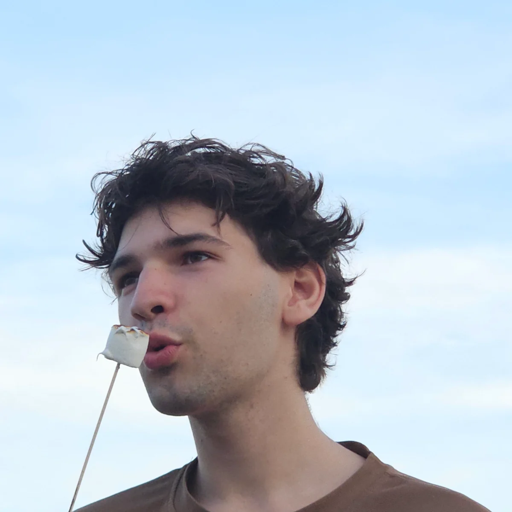

/ 01
Telegram-боты
Умные сценарии, интеграции с сервисами и автоматизация задач прямо внутри Telegram.
Создаю Telegram-ботов, сайты, скрипты и всё, что можно воплотить с помощью кода. Превращаю идеи в работающие решения.
Помогаю превратить задачи и задумки в удобные цифровые инструменты. От небольшого скрипта до полноценного веб-проекта.
Умные сценарии, интеграции с сервисами и автоматизация задач прямо внутри Telegram.
Лендинги, интерфейсы и веб-решения, которые приятно использовать и легко развивать.
Скрипты, инструменты и нестандартные решения, которые экономят время и убирают рутину.

HELLO, IT'S MEМне 18 лет, и я уже успел поработать над десятками самых разных проектов. Люблю разбираться в сложных задачах и превращать их в простые, удобные решения.
Быстро осваиваю новые технологии, слежу за тем, что происходит в мире разработки, и всегда открыт к свежим идеям. Мне важно не просто написать код, а создать то, что действительно будет полезно.
Кстати, вам не нужен отдельный дизайнер — визуальную часть проекта я тоже беру на себя, чтобы всё выглядело цельно и аккуратно.
Есть идея? С радостью помогу её воплотить. Буду рад твоему сообщению!
Написать мне в Telegram↗Расскажи о своей задумке, даже если она пока существует только у тебя в голове. Вместе разберёмся, как её реализовать.
Написать в Telegram↗